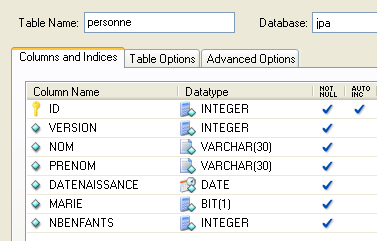
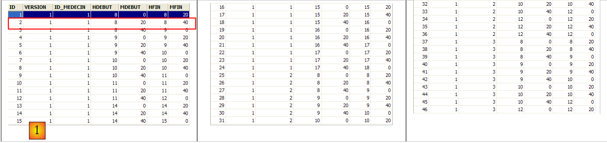
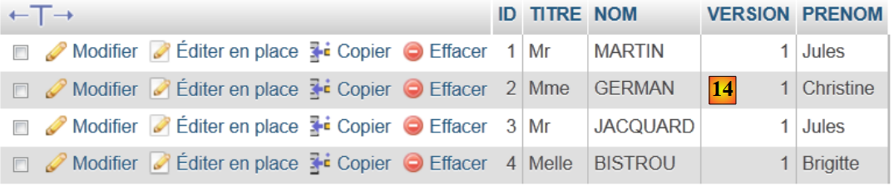
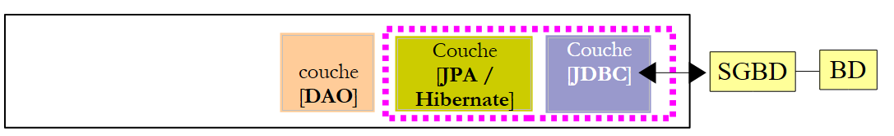
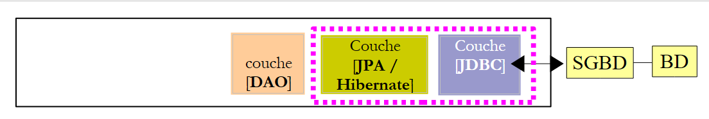
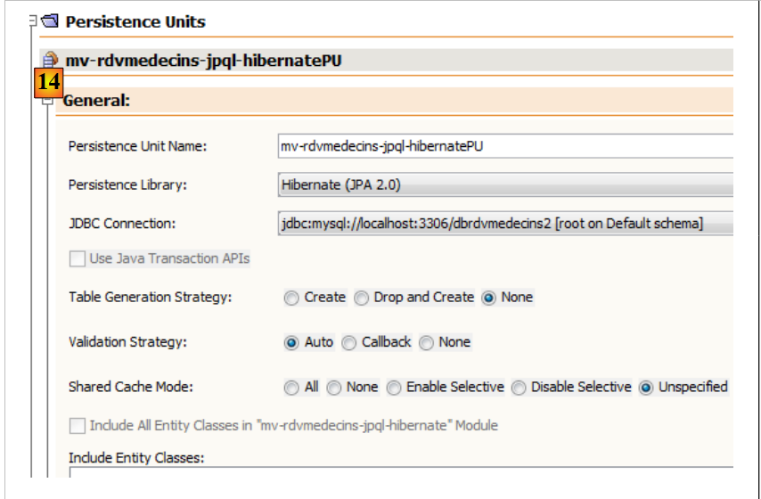
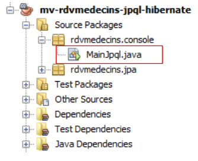

4. s JPA: نظرة عامة
نهدف إلى تقديم JPA (Java Persistence API) من خلال بعض الأمثلة. يتم تناول JPA في الدورة التدريبية:
- استمرارية Java 5 في الممارسة العملية: [http://tahe.developpez.com/java/jpa] - توفر الأدوات اللازمة لبناء طبقة الوصول إلى البيانات باستخدام JPA
4.1. دور JPA في البنية الطبقية
يُنصح القراء بمراجعة بداية هذا المستند (الفقرة 2)، التي تشرح دور طبقة JPA في بنية الطبقات. طبقة JPA هي جزء من طبقات الوصول إلى البيانات:
 |
تتفاعل طبقة [DAO] مع مواصفات JPA. وبغض النظر عن المنتج الذي ينفذها، تظل واجهة طبقة JPA المعروضة على طبقة [DAO] كما هي. وفيما يلي، نقدم بعض الأمثلة من [ref1] التي ستساعدنا في بناء طبقة JPA الخاصة بنا.
4.2. JPA - أمثلة
4.2.1. المثال 1 - تمثيل كائن لجدول واحد
4.2.1.1. جدول [person]
لنفترض وجود قاعدة بيانات تحتوي على جدول [person] واحد، وتتمثل وظيفته في تخزين بعض المعلومات عن الأفراد:
 |
المفتاح الأساسي للجدول | |
إصدار الصف في الجدول. في كل مرة يتم فيها تعديل الشخص، يتم زيادة رقم الإصدار الخاص به. | |
اللقب | |
الاسم الأول | |
تاريخ ميلادهم | |
عدد صحيح 0 (غير متزوج) أو 1 (متزوج) | |
عدد الأطفال |
4.2.1.2. كيان [الشخص]
نحن في بيئة التشغيل التالية:
 |
يجب أن تعمل طبقة JPA [5] كجسر بين عالم قواعد البيانات العلائقية [7] وعالم الكائنات [4] الذي تتعامل معه برامج Java [3]. يتم إنشاء هذا الجسر من خلال التكوين، وهناك طريقتان للقيام بذلك:
- استخدام ملفات XML. كانت هذه هي الطريقة الوحيدة تقريبًا للقيام بذلك حتى ظهور JDK 1.5
- باستخدام تعليقات Java منذ JDK 1.5
في هذا المستند، سنستخدم الطريقة الثانية حصريًا.
يمكن أن يكون الكائن [Person] الذي يمثل الجدول [person] المقدم سابقًا كما يلي:
...
@SuppressWarnings("unused")
@Entity
@Table(name="Personne")
public class Personne implements Serializable{
@Id
@Column(name = "ID", nullable = false)
@GeneratedValue(strategy = GenerationType.AUTO)
private Integer id;
@Column(name = "VERSION", nullable = false)
@Version
private int version;
@Column(name = "NOM", length = 30, nullable = false, unique = true)
private String nom;
@Column(name = "PRENOM", length = 30, nullable = false)
private String prenom;
@Column(name = "DATENAISSANCE", nullable = false)
@Temporal(TemporalType.DATE)
private Date datenaissance;
@Column(name = "MARIE", nullable = false)
private boolean marie;
@Column(name = "NBENFANTS", nullable = false)
private int nbenfants;
// manufacturers
public Personne() {
}
public Personne(String nom, String prenom, Date datenaissance, boolean marie,
int nbenfants) {
setNom(nom);
setPrenom(prenom);
setDatenaissance(datenaissance);
setMarie(marie);
setNbenfants(nbenfants);
}
// toString
public String toString() {
...
}
// getters and setters
...
}
يتم إجراء التكوين باستخدام تعليقات Java (@Annotation). تتم معالجة تعليقات Java إما بواسطة المُجمِّع أو بواسطة أدوات متخصصة في وقت التشغيل. وبصرف النظر عن التعليق الموجود في السطر 3 والمخصص للمُجمِّع، فإن جميع التعليقات هنا مخصصة لتنفيذ JPA المستخدم، سواء كان Hibernate أو Toplink. وبالتالي، سيتم معالجتها في وقت التشغيل. في حالة عدم وجود أدوات قادرة على تفسيرها، يتم تجاهل هذه التعليقات التوضيحية. وبالتالي، يمكن استخدام فئة [Person] أعلاه في سياق غير JPA.
هناك حالتان متميزتان لاستخدام تعليقات JPA في فئة C مرتبطة بجدول T:
- الجدول T موجود بالفعل: يجب أن تكرر تعليقات JPA الهيكل الموجود (أسماء الأعمدة وتعريفاتها، وقيود التكامل، والمفاتيح الخارجية، والمفاتيح الأساسية، وما إلى ذلك)
- الجدول T غير موجود وسيتم إنشاؤه بناءً على التعليقات التوضيحية الموجودة في الفئة C.
الحالة 2 هي الأسهل في التعامل معها. باستخدام تعليقات JPA، نحدد بنية الجدول T الذي نريده. غالبًا ما تكون الحالة 1 أكثر تعقيدًا. ربما تم إنشاء الجدول T منذ وقت طويل خارج أي سياق JPA. وبالتالي، قد تكون بنيته غير مناسبة لجسر JPA بين العلاقات والكائنات. لتبسيط الأمور، سنركز على الحالة 2، حيث سيتم إنشاء الجدول T المرتبط بالفئة C بناءً على تعليقات JPA في الفئة C.
دعونا نفحص تعليقات JPA للفئة [Person]:
- السطر 4: تعليق @Entity هو أول تعليق أساسي. يتم وضعه قبل السطر الذي يعلن الفئة ويشير إلى أن الفئة المعنية يجب أن تدار بواسطة طبقة ثبات JPA. بدون هذا التعليق، سيتم تجاهل جميع تعليقات JPA الأخرى.
- السطر 5: تحدد تعليمة @Table جدول قاعدة البيانات الذي تمثله الفئة. حجتها الرئيسية هي name، والتي تحدد اسم الجدول. بدون هذه الحجة، سيتم تسمية الجدول على اسم الفئة، في هذه الحالة [Person]. في مثالنا، تعليمة @Table غير ضرورية بالتالي.
- السطر 8: تُستخدم علامة @Id لتعيين الحقل في الفئة الذي يتوافق مع المفتاح الأساسي للجدول. هذه العلامة إلزامية. هنا، تشير إلى أن حقل id في السطر 11 يتوافق مع المفتاح الأساسي للجدول.
- السطر 9: تُستخدم علامة @Column لربط حقل الفئة بعمود الجدول الذي يمثله الحقل. تحدد السمة name اسم العمود في الجدول. إذا تم حذف هذه السمة، يُعطى العمود نفس اسم الحقل. في مثالنا، كانت الحجة name اختيارية بالتالي. تحدد الحجة nullable=false أن العمود المرتبط بالحقل لا يمكن أن يكون له قيمة NULL وأن الحقل يجب أن يكون له قيمة بالتالي.
- السطر 10: تحدد العلامة التوضيحية @GeneratedValue كيفية إنشاء المفتاح الأساسي عندما يتم إنشاؤه تلقائيًا بواسطة نظام إدارة قواعد البيانات (DBMS). وسيكون هذا هو الحال في جميع أمثلةنا. وهي ليست إلزامية. وبالتالي، يمكن أن يكون لفئة Person رقم هوية الطالب الذي يعمل كمفتاح أساسي ولا يتم إنشاؤه بواسطة نظام إدارة قواعد البيانات (DBMS) بل يتم تعيينه بواسطة التطبيق. وفي هذه الحالة، سيتم حذف العلامة التوضيحية @GeneratedValue. تحدد حجة الاستراتيجية كيفية إنشاء المفتاح الأساسي عند إنشائه بواسطة نظام إدارة قواعد البيانات (DBMS). لا تستخدم جميع أنظمة إدارة قواعد البيانات (DBMS) نفس التقنية لإنشاء قيم المفتاح الأساسي. على سبيل المثال:
يستخدم مولد قيم يتم استدعاؤه قبل كل عملية إدراج | |
يتم تعريف حقل المفتاح الأساسي على أنه من النوع Identity. والنتيجة مشابهة لمولد القيم في Firebird، باستثناء أن قيمة المفتاح لا تُعرف إلا بعد إدراج الصف. | |
يستخدم كائنًا يسمى SEQUENCE، والذي يعمل بدوره كمولد للقيم |
يجب أن تولد طبقة JPA عبارات SQL مختلفة اعتمادًا على نظام إدارة قواعد البيانات (DBMS) لإنشاء مولد القيم. يتم تكوينها لتحديد نوع نظام إدارة قواعد البيانات (DBMS) الذي يجب أن تتعامل معه. ونتيجة لذلك، يمكنها تحديد الإستراتيجية القياسية لتوليد قيم المفتاح الأساسي لنظام إدارة قواعد البيانات (DBMS) هذا. توجه الحجة strategy =** ***GenerationType*****.*****AUTO* طبقة JPA لاستخدام هذه الإستراتيجية القياسية. وقد نجحت هذه التقنية في جميع الأمثلة الواردة في هذا المستند بالنسبة لنظم إدارة قواعد البيانات السبعة المستخدمة.
- السطر 14: تحدد العلامة التوضيحية @Version الحقل المستخدم لإدارة الوصول المتزامن إلى نفس الصف في الجدول.
لفهم مسألة الوصول المتزامن إلى نفس الصف في جدول [person]، لنفترض أن تطبيق ويب يسمح بتحديث معلومات شخص ما وننظر في السيناريو التالي:
في الوقت T1، يبدأ المستخدم U1 في تعديل شخص P. في هذه اللحظة، يكون عدد الأطفال 0. يقوم بتغيير هذا الرقم إلى 1، ولكن قبل أن يرسل تغييراته، يبدأ المستخدم U2 في تعديل نفس الشخص P. نظرًا لأن U1 لم يرسل تغييراته بعد، يرى U2 عدد الأطفال على شاشته كـ 0. يقوم U2 بتغيير اسم الشخص P إلى أحرف كبيرة. ثم يحفظ U1 و U2 تغييراتهما بهذا الترتيب. سيكون لتغيير U2 الأسبقية: في قاعدة البيانات، سيكون الاسم بأحرف كبيرة وسيظل عدد الأطفال صفرًا، على الرغم من أن U1 يعتقد أنه غيره إلى 1.
يساعدنا مفهوم إصدار الشخص في حل هذه المشكلة. دعونا نعيد النظر في نفس حالة الاستخدام:
في الوقت T1، يبدأ المستخدم U1 في تعديل الشخص P. في هذه المرحلة، يكون عدد الأبناء 0 والإصدار هو V1. يقوم بتغيير عدد الأبناء إلى 1، ولكن قبل أن يلتزم بتغييره، يبدأ المستخدم U2 في تعديل نفس الشخص P. نظرًا لأن U1 لم يلتزم بتغييره بعد، يرى U2 أن عدد الأبناء هو 0 والإصدار هو V1. يغير U2 اسم الشخص P إلى أحرف كبيرة. ثم يقوم U1 و U2 بتثبيت تغييراتهما بهذا الترتيب. قبل تثبيت التغيير، نتحقق من أن المستخدم الذي يعدل الشخص P يمتلك نفس الإصدار الموجود في الإصدار المحفوظ حاليًا للشخص P. سيكون هذا هو الحال بالنسبة للمستخدم U1. وبالتالي يتم قبول تغييره، ثم نقوم بتغيير إصدار الشخص المعدل من V1 إلى V2 للإشارة إلى أن الشخص قد خضع لتغيير. عند التحقق من صحة تعديل U2، سنلاحظ أن U2 لديه الإصدار V1 للشخص P، في حين أن الإصدار الحالي هو V2. يمكننا بعد ذلك إبلاغ المستخدم U2 بأن شخصًا آخر قد سبقه وأنه يجب عليه البدء بالإصدار الجديد للشخص P. وسيقوم بذلك، ويسترد الإصدار V2 للشخص P الذي أصبح لديه الآن طفل، ويكتب الاسم بأحرف كبيرة، ويقوم بالتحقق من الصحة. سيتم قبول تعديله إذا كان الشخص P المسجل لا يزال في الإصدار V2. في النهاية، سيتم أخذ التعديلات التي أجراها U1 و U2 في الاعتبار، بينما في حالة الاستخدام بدون إصدارات، كان سيتم فقدان أحد التعديلات.
يمكن لطبقة [DAO] في تطبيق العميل إدارة إصدار فئة [Person] نفسها. في كل مرة يتم فيها تعديل كائن P، سيتم زيادة إصدار هذا الكائن بمقدار 1 في الجدول. تسمح تعليمة @Version بنقل هذه الإدارة إلى طبقة JPA. لا يلزم تسمية الحقل المعني بـ "version" كما في المثال. يمكن أن يكون له أي اسم.
توجد الحقول المطابقة لعلامتي @Id و@Version لأغراض الاستمرارية. ولن تكون هناك حاجة إليها إذا لم تكن هناك حاجة إلى استمرار فئة [Person]. وبالتالي، يمكننا أن نرى أن الكائن يتم تمثيله بشكل مختلف اعتمادًا على ما إذا كان هناك حاجة إلى استمراره أم لا.
- السطر 17: مرة أخرى، توفر علامة @Column معلومات حول العمود في جدول [person] المرتبط بحقل name في فئة Person. نجد هنا حجتين جديدتين:
- unique=true تشير إلى أن اسم الشخص يجب أن يكون فريدًا. سيؤدي هذا إلى إضافة قيد فريدية على عمود NAME في جدول [person] في قاعدة البيانات.
- length=30 يحدد عدد الأحرف في عمود NAME بـ 30. وهذا يعني أن نوع هذا العمود سيكون VARCHAR(30).
- السطر 24: تُستخدم التعليقة التوضيحية @Temporal لتحديد نوع SQL لعمود أو حقل التاريخ/الوقت. يشير النوع TemporalType.DATE إلى تاريخ بدون وقت مرتبط به. الأنواع الأخرى الممكنة هي TemporalType.TIME لترميز الوقت و TemporalType.TIMESTAMP لترميز التاريخ والوقت.
دعونا الآن نعلق على بقية الكود في فئة [Person]:
- السطر 6: تنفذ الفئة واجهة Serializable. يتضمن تسلسل كائن ما تحويله إلى تسلسل من البتات. وإلغاء التسلسل هو العملية العكسية. ويُستخدم التسلسل/إلغاء التسلسل بشكل خاص في تطبيقات العميل/الخادم حيث يتم تبادل الكائنات عبر الشبكة. لا تدرك تطبيقات العميل أو الخادم هذه العملية، التي يتم تنفيذها بشكل شفاف بواسطة JVMs. ولكن لكي يكون ذلك ممكنًا، يجب "تمييز" فئات الكائنات المتبادلة بكلمة Serializable.
- السطر 37: منشئ للفئة. لاحظ أن حقلي id و version غير مدرجين ضمن المعلمات. ويرجع ذلك إلى أن هذين الحقلين تديرهما طبقة JPA وليس التطبيق.
- السطر 51 وما بعده: طرق get و set لكل حقل من حقول الفئة. لاحظ أنه يمكن وضع تعليقات JPA على طرق get الخاصة بالحقول بدلاً من الحقول نفسها. يشير موضع التعليقات إلى الوضع الذي يجب أن تستخدمه JPA للوصول إلى الحقول:
- إذا تم وضع التعليقات التوضيحية على مستوى الحقل، فستصل JPA إلى الحقول مباشرةً لقراءتها أو كتابتها
- إذا تم وضع التعليقات التوضيحية على مستوى get، فستصل JPA إلى الحقول عبر طرق get/set لقراءتها أو كتابتها
يحدد موضع تعليق @Id موضع تعليقات JPA في الفئة. عند وضعه على مستوى الحقل، يشير إلى الوصول المباشر إلى الحقول؛ وعند وضعه على مستوى get، يشير إلى الوصول إلى الحقول عبر طرق get و set. يجب بعد ذلك وضع التعليقات الأخرى بنفس طريقة وضع تعليق @Id.
4.2.2. تكوين طبقة JPA
يمكن إجراء اختبارات طبقة JPA باستخدام البنية التالية:
 |
- في [7]: قاعدة البيانات التي سيتم إنشاؤها من تعليقات الكيان [Person] بالإضافة إلى التكوينات الإضافية التي تم إجراؤها في ملف يسمى [persistence.xml]
- في [5، 6]: طبقة JPA تم تنفيذها بواسطة Hibernate
- في [4]: كيان [Person]
- في [3]: برنامج اختبار قائم على وحدة التحكم
يتم تكوين طبقة JPA عبر ملف [META-INF/persistence.xml]:
 |
أثناء وقت التشغيل، يتم البحث عن ملف [META-INF/persistence.xml] في مسار فئات التطبيق.
دعونا نفحص تكوين طبقة JPA في ملف [persistence.xml] الخاص بمشروعنا:
<?xml version="1.0" encoding="UTF-8"?>
<persistence version="1.0" xmlns="http://java.sun.com/xml/ns/persistence">
<persistence-unit name="jpa" transaction-type="RESOURCE_LOCAL">
<!-- provider -->
<provider>org.hibernate.ejb.HibernatePersistence</provider>
<properties>
<!-- Persistent classes -->
<property name="hibernate.archive.autodetection" value="class, hbm" />
<!-- logs SQL
<property name="hibernate.show_sql" value="true"/>
<property name="hibernate.format_sql" value="true"/>
<property name="use_sql_comments" value="true"/>
-->
<!-- connection JDBC -->
<property name="hibernate.connection.driver_class" value="com.mysql.jdbc.Driver" />
<property name="hibernate.connection.url" value="jdbc:mysql://localhost:3306/jpa" />
<property name="hibernate.connection.username" value="jpa" />
<property name="hibernate.connection.password" value="jpa" />
<!-- automatic schematic creation -->
<property name="hibernate.hbm2ddl.auto" value="create" />
<!-- Dialect -->
<property name="hibernate.dialect" value="org.hibernate.dialect.MySQL5InnoDBDialect" />
<!-- properties DataSource c3p0 -->
<property name="hibernate.c3p0.min_size" value="5" />
<property name="hibernate.c3p0.max_size" value="20" />
<property name="hibernate.c3p0.timeout" value="300" />
<property name="hibernate.c3p0.max_statements" value="50" />
<property name="hibernate.c3p0.idle_test_period" value="3000" />
</properties>
</persistence-unit>
</persistence>
لفهم هذا التكوين، نحتاج إلى إعادة النظر في بنية الوصول إلى البيانات في تطبيقنا:
 |
- يقوم ملف [persistence.xml] بتكوين الطبقات [4، 5، 6]
- [4]: تنفيذ Hibernate لـ JPA
- [5]: يصل Hibernate إلى قاعدة البيانات عبر تجمع اتصالات. تجمع الاتصالات هو مجموعة من الاتصالات المفتوحة بنظام إدارة قواعد البيانات (DBMS). يتم الوصول إلى نظام إدارة قواعد البيانات (DBMS) من قبل عدة مستخدمين، ولكن لأسباب تتعلق بالأداء، لا يمكن أن يتجاوز عدد الاتصالات المفتوحة في وقت واحد الحد N. يفتح الكود المكتوب بشكل جيد اتصالاً بنظام إدارة قواعد البيانات (DBMS) لأقل وقت ممكن: فهو ينفذ أوامر SQL ويغلق الاتصال. وسيقوم بذلك بشكل متكرر، في كل مرة يحتاج فيها إلى العمل مع قاعدة البيانات. تكلفة فتح وإغلاق الاتصال ليست ضئيلة، وهنا يأتي دور مجموعة الاتصالات. عند بدء تشغيل التطبيق، تفتح مجموعة الاتصالات N1 اتصالاً بنظام إدارة قواعد البيانات (DBMS). يطلب التطبيق اتصالاً مفتوحاً من المجموعة كلما احتاج إلى واحد. يتم إرجاع الاتصال إلى المجمع بمجرد أن لا يعود التطبيق بحاجة إليه، ويفضل أن يكون ذلك بأسرع وقت ممكن. لا يتم إغلاق الاتصال ويظل متاحًا للمستخدم التالي. وبالتالي، فإن مجمع الاتصالات هو نظام لمشاركة الاتصالات المفتوحة.
- [6]: برنامج تشغيل JDBC لنظام إدارة قواعد البيانات المستخدم
الآن دعونا نرى كيف يقوم ملف [persistence.xml] بتكوين الطبقات [4، 5، 6] أعلاه:
- السطر 2: العلامة الجذرية لملف XML هي <persistence>.
- السطر 3: تُستخدم <persistence-unit> لتعريف وحدة الاستمرارية. يمكن أن يكون هناك عدة وحدات استمرارية. لكل منها اسم (سمة name) ونوع معاملة (سمة transaction-type). سيصل التطبيق إلى وحدة الاستمرارية عبر اسمها، وهو jpa في هذه الحالة. يشير نوع المعاملة RESOURCE_LOCAL إلى أن التطبيق يدير المعاملات مع نظام إدارة قواعد البيانات نفسه. وهذا هو الحال هنا. عندما يعمل التطبيق في حاوية EJB3، يمكنه استخدام خدمة المعاملات الخاصة بالحاوية. في هذه الحالة، سنقوم بتعيين transaction-type=JTA (Java Transaction API). JTA هي القيمة الافتراضية عند حذف سمة transaction-type.
- السطر 5: تُستخدم علامة <provider> لتعريف فئة تُنفذ واجهة [javax.persistence.spi.PersistenceProvider]، مما يسمح للتطبيق بتهيئة طبقة الاستمرارية. نظرًا لأننا نستخدم تنفيذ JPA/Hibernate، فإن الفئة المستخدمة هنا هي فئة Hibernate.
- السطر 6: تقدم علامة <properties> خصائص خاصة بالمزود المختار. وبالتالي، اعتمادًا على ما إذا كنت قد اخترت Hibernate أو TopLink أو Kodo أو غيرها، فستكون لديك خصائص مختلفة. فيما يلي الخصائص الخاصة بـ Hibernate.
- السطر 8: يوجه Hibernate إلى فحص مسار فئات المشروع للعثور على الفئات المُعلَّمة بـ @Entity حتى يمكن إدارتها. يمكن أيضًا إعلان فئات @Entity باستخدام علامات <class>class_name</class>، مباشرةً أسفل علامة <persistence-unit>. هذا ما سنفعله مع مزود JPA/Toplink.
- الأسطر 10-12، التي تم تعليقها هنا، تكوّن سجلات وحدة التحكم في Hibernate:
- السطر 10: لتمكين أو تعطيل عرض عبارات SQL الصادرة عن Hibernate إلى نظام إدارة قواعد البيانات (DBMS). وهذا مفيد جدًا خلال مرحلة التعلم. وبسبب الجسر العلائقي/الكائني، يعمل التطبيق على كائنات ثابتة يطبق عليها عمليات مثل [persist، merge، remove]. ومن المفيد جدًا معرفة عبارات SQL التي يتم إصدارها فعليًا لهذه العمليات. من خلال دراستها، تتعلم تدريجيًا توقع عبارات SQL التي سيقوم Hibernate بإنشائها عند تنفيذ مثل هذه العمليات على الكائنات الدائمة، ويبدأ الجسر العلائقي/الكائني في التبلور في ذهنك.
- السطر 11: يمكن تنسيق عبارات SQL المعروضة على وحدة التحكم بشكل أنيق لتسهيل قراءتها
- السطر 12: سيتم أيضًا توضيح عبارات SQL المعروضة
- تحدد الأسطر 15-19 طبقة JDBC (الطبقة [6] في البنية):
- السطر 15: فئة برنامج تشغيل JDBC لنظام إدارة قواعد البيانات، وهنا MySQL5
- السطر 16: عنوان URL لقاعدة البيانات المستخدمة
- السطران 17 و 18: اسم المستخدم وكلمة المرور للاتصال
- السطر 22: يحتاج Hibernate إلى معرفة نظام إدارة قواعد البيانات (DBMS) الذي يعمل معه. وذلك لأن جميع أنظمة إدارة قواعد البيانات (DBMS) لديها امتدادات SQL خاصة بها — مثل طرقها الخاصة لتوليد قيم المفاتيح الأساسية تلقائيًا — مما يعني أن Hibernate يجب أن يحدد نظام إدارة قواعد البيانات (DBMS) المحدد لإرسال عبارات SQL التي يمكنه فهمها. يشير [MySQL5InnoDBDialect] إلى نظام إدارة قواعد البيانات (DBMS) MySQL5 مع جداول InnoDB التي تدعم المعاملات.
- تقوم الأسطر 24-28 بتكوين تجمع اتصالات c3p0 (الطبقة [5] في البنية):
- السطران 24 و25: الحد الأدنى (الافتراضي 3) والحد الأقصى لعدد الاتصالات (الافتراضي 15) في المجموعة. العدد الافتراضي الأولي للاتصالات هو 3.
- السطر 26: الحد الأقصى لوقت الانتظار بالمللي ثانية لطلب اتصال من العميل. بعد انتهاء مهلة الانتظار هذه، سيعرض c3p0 استثناءً.
- السطر 27: للوصول إلى قاعدة البيانات، يستخدم Hibernate عبارات SQL المعدة مسبقًا (PreparedStatement) التي يمكن لـ c3p0 تخزينها في ذاكرة التخزين المؤقت. وهذا يعني أنه إذا طلب التطبيق عبارة SQL معدة مسبقًا موجودة بالفعل في ذاكرة التخزين المؤقت للمرة الثانية، فلن تكون هناك حاجة لإعدادها (حيث أن إعداد عبارة SQL ينطوي على تكلفة)، وسيتم استخدام العبارة الموجودة في ذاكرة التخزين المؤقت. هنا، نحدد الحد الأقصى لعدد عبارات SQL المعدة التي يمكن أن تحتويها ذاكرة التخزين المؤقت، عبر جميع الاتصالات (تنتمي عبارة SQL المعدة إلى اتصال واحد).
- السطر 28: تكرار التحقق من صحة الاتصالات بالمللي ثانية. يمكن أن يصبح الاتصال في المجموعة غير صالح لأسباب مختلفة (يقوم برنامج تشغيل JDBC بإبطال صلاحية الاتصال لأنه ظل مفتوحًا لفترة طويلة جدًا، أو أن برنامج تشغيل JDBC به "أخطاء"، وما إلى ذلك).
- السطر 20: هنا، نحدد أنه عند تهيئة طبقة الاستمرارية، يجب إنشاء مخطط قاعدة البيانات لكائنات @Entity. يمتلك Hibernate الآن جميع الأدوات اللازمة لإنشاء عبارات SQL لإنشاء جداول قاعدة البيانات:
- تسمح تكوين كائنات @Entity له بتحديد الجداول التي يجب إنشاؤها
- تسمح الأسطر 15-18 و24-28 له بإنشاء اتصال مع نظام إدارة قواعد البيانات
- يحدد السطر 22 له لهجة SQL التي يجب استخدامها لإنشاء الجداول
وبالتالي، فإن ملف [persistence.xml] المستخدم هنا يعيد إنشاء قاعدة بيانات جديدة في كل مرة يتم فيها تشغيل التطبيق. يتم إعادة إنشاء الجداول (create table) بعد حذفها (drop table) إذا كانت موجودة. لاحظ أن هذا بالطبع ليس شيئًا ينبغي القيام به مع قاعدة بيانات الإنتاج...
4.2.3. المثال 2: علاقة واحد إلى عدة
4.2.3.1. ملف مخطط قاعدة البيانات [
1  | 2 |
- في [1]، قاعدة البيانات، وفي [2]، لغة تعريف البيانات (DDL) الخاصة بها (MySQL5)
ينتمي المقال A(id, version, name) إلى فئة واحدة فقط C(id, version, name). يمكن أن تحتوي الفئة C على 0 أو 1 أو أكثر من المقالات. لدينا علاقة واحد إلى العديد (الفئة -> المقالة) والعلاقة العكسية العديد إلى واحد (المقالة -> الفئة). يتم تمثيل هذه العلاقة بواسطة المفتاح الخارجي الذي يمتلكه جدول [article] في جدول [category] (الأسطر 24–28 من DDL).
4.2.3.2. كائنات @Entity التي تمثل قاعدة البيانات
يتم تمثيل المقالة بواسطة @Entity [Article] التالية:
package entites;
...
@Entity
@Table(name="jpa05_hb_article")
public class Article implements Serializable {
// fields
@Id
@GeneratedValue(strategy = GenerationType.AUTO)
private Long id;
@SuppressWarnings("unused")
@Version
private int version;
@Column(length = 30)
private String nom;
// main relationship Article (many) -> Category (one)
// implemented by a foreign key (categorie_id) in Article
// 1 Article must have 1 Category (nullable=false)
@ManyToOne(fetch=FetchType.LAZY)
@JoinColumn(name = "categorie_id", nullable = false)
private Categorie categorie;
// manufacturers
public Article() {
}
// getters and setters
...
// toString
public String toString() {
return String.format("Article[%d,%d,%s,%d]", id, version, nom, categorie.getId());
}
}
- الأسطر 9-11: المفتاح الأساسي لـ @Entity
- الأسطر 13-15: رقم إصداره
- السطور 17-18: اسم المقالة
- الأسطر 20-25: علاقة "كثير إلى واحد" تربط @Entity Article بـ @Entity Category:
- السطر 23: تعليق ManyToOne. يشير Many إلى @Entity Article الذي نحن فيه، ويشير One إلى @Entity Category (السطر 25). يمكن أن تحتوي الفئة (One) على مقالات متعددة (Many).
- السطر 24: تعريف ManyToOne يحدد عمود المفتاح الأجنبي في جدول [article]. سيتم تسميته (name) categorie_id، ويجب أن يحتوي كل صف على قيمة في هذا العمود (nullable=false).
- السطر 25: الفئة التي ينتمي إليها المقال. عند إضافة مقال إلى سياق الاستمرارية، نطلب عدم إضافة فئته على الفور (fetch=FetchType.LAZY، السطر 23). لا نعرف ما إذا كان هذا الطلب منطقيًا. سنرى.
يتم تمثيل الفئة بواسطة @Entity [Category] التالي:
package entites;
...
@Entity
@Table(name="jpa05_hb_categorie")
public class Categorie implements Serializable {
// fields
@Id
@GeneratedValue(strategy = GenerationType.AUTO)
private Long id;
@SuppressWarnings("unused")
@Version
private int version;
@Column(length = 30)
private String nom;
// inverse relationship Category (one) -> Article (many) from relationship Article (many) -> Category (one)
// cascade insertion Category -> insertion Articles
// cascade maj Category -> maj Articles
// cascade delete Category -> delete Articles
@OneToMany(mappedBy = "categorie", cascade = { CascadeType.ALL })
private Set<Article> articles = new HashSet<Article>();
// manufacturers
public Categorie() {
}
// getters and setters
...
// toString
public String toString() {
return String.format("Categorie[%d,%d,%s]", id, version, nom);
}
// bidirectional association Category <--> Article
public void addArticle(Article article) {
// the item is added to the collection of items in the category
articles.add(article);
// article changes category
article.setCategorie(this);
}
}
- الأسطر 8-11: المفتاح الأساسي لـ @Entity
- الأسطر 12-14: إصداره
- السطور 16-17: اسم الفئة
- الأسطر 19-24: مجموعة المقالات في الفئة
- السطر 23: تشير التعليقات التوضيحية @OneToMany إلى علاقة واحد إلى العديد. يشير "One" إلى @Entity [Category] التي نحن فيها، ويشير "Many" إلى نوع [Article] في السطر 24: فئة واحدة (One) تحتوي على العديد (Many) من المقالات.
- السطر 23: التعليق التوضيحي هو العكس (mappedBy) للتعليق التوضيحي ManyToOne الموضوع على حقل الفئة في @Entity Article: mappedBy=category. العلاقة ManyToOne الموضوعة على حقل الفئة في @Entity Article هي العلاقة الأساسية. وهي ضرورية. فهي تنفذ علاقة المفتاح الأجنبي التي تربط @Entity Article بـ @Entity Category. العلاقة OneToMany الموضوعة على حقل المقالات في @Entity Category هي العلاقة العكسية. وهي ليست أساسية. إنها وسيلة ملائمة لاسترجاع مقالات فئة ما. وبدون هذه الوسيلة الملائمة، سيتم استرجاع هذه المقالات عبر استعلام JPQL.
- السطر 23: يضمن cascadeType.ALL أن العمليات (persist، merge، remove) التي يتم إجراؤها على @Entity Category يتم ترحيلها إلى مقالاتها.
- السطر 24: سيتم وضع المقالات الموجودة في فئة ما في كائن من النوع `Set<Article>`. ولا يسمح النوع `Set` بوجود تكرارات. وبالتالي، لا يمكن إضافة المقالة نفسها مرتين إلى كائن `Set<Article>`. ما المقصود بـ"المقالة نفسها"؟ للإشارة إلى أن المقالة `a` هي نفس المقالة `b`، تستخدم لغة جافا التعبير `a.equals(b)`. في فئة Object، وهي الفئة الأم لجميع الفئات، يكون a.equals(b) صحيحًا إذا كان a==b، أي إذا كان للكائنين a و b نفس موقع الذاكرة. قد يرغب المرء في القول إن العنصرين a و b متطابقان إذا كان لهما نفس الاسم. في هذه الحالة، يجب على المطور إعادة تعريف طريقتين في فئة [Item]:
- equals: التي يجب أن ترجع true إذا كان العنصران يحملان نفس الاسم
- hashCode: يجب أن ترجع نفس القيمة الصحيحة لكائنين [Article] تعتبرهما طريقة equals متساويين. هنا، سيتم بناء القيمة من اسم المقالة. يمكن أن تكون القيمة التي ترجعها hashCode أي عدد صحيح. وتستخدم في حاويات كائنات متنوعة، خاصة القواميس (Hashtable).
يمكن للعلاقة OneToMany استخدام أنواع أخرى غير Set لتخزين Many، مثل كائنات List. لن نتناول هذه الحالات في هذا المستند. يمكن للقارئ العثور عليها في [ref1].
- السطر 38: تسمح لنا طريقة [addArticle] بإضافة مقال إلى فئة. تضمن الطريقة تحديث طرفي علاقة OneToMany التي تربط [Category] بـ [Article].
4.3. واجهة برمجة تطبيقات طبقة JPA
دعونا نوضح بيئة وقت التشغيل لعميل JPA:
 |
نعلم أن طبقة JPA [2] تُنشئ جسراً بين المجال الكائني [3] والمجال العلائقي [4]. تُسمى مجموعة الكائنات التي تديرها طبقة JPA ضمن هذا الجسر الكائني/العلائقي بـ"سياق الاستمرارية". للوصول إلى البيانات في سياق الاستمرارية، يجب على عميل JPA [1] المرور عبر طبقة JPA [2]:
- يمكنه إنشاء كائن وطلب من طبقة JPA جعله ثابتًا. يصبح الكائن بعد ذلك جزءًا من سياق الثبات.
- يمكنه طلب مرجع إلى كائن ثابت موجود من طبقة [JPA].
- يمكنه تعديل كائن ثابت تم الحصول عليه من طبقة JPA.
- يمكنه أن يطلب من طبقة JPA إزالة كائن من سياق الاستمرارية.
توفر طبقة JPA للعميل واجهة تسمى [EntityManager] والتي، كما يوحي اسمها، تسمح بإدارة كائنات @Entity في سياق الاستمرارية. فيما يلي الطرق الرئيسية لهذه الواجهة:
تضيف الكيان إلى سياق الاستمرارية | |
يزيل الكيان من سياق الاستمرارية | |
يدمج كائن كيان من العميل لا يديره سياق الاستمرارية مع كائن الكيان الموجود في سياق الاستمرارية الذي يحمل نفس المفتاح الأساسي. والنتيجة التي يتم إرجاعها هي كائن الكيان من سياق الاستمرارية. | |
يضع كائنًا تم استرداده من قاعدة البيانات في سياق الاستمرارية عبر مفتاحه الأساسي. يسمح نوع T للكائن لطبقة JPA بمعرفة الجدول الذي يجب الاستعلام عنه. يتم إرجاع الكائن الدائم الذي تم إنشاؤه بهذه الطريقة إلى العميل. | |
ينشئ كائن استعلام من JPQL (لغة استعلام استمرارية Java Query Language). استعلام JPQL مشابه لاستعلام SQL، باستثناء أنه يستعلم عن الكائنات بدلاً من الجداول. | |
طريقة مشابهة للطريقة السابقة، باستثناء أن queryText هو استعلام SQL بدلاً من استعلام JPQL. | |
طريقة مطابقة لـ createQuery، باستثناء أن استعلام JPQL queryText قد تم إخراجه إلى ملف تكوين وربطه باسم. هذا الاسم هو معلمة الطريقة. |
يتمتع كائن EntityManager بدورة حياة لا تتطابق بالضرورة مع دورة حياة التطبيق. له بداية ونهاية. وبالتالي، يمكن لعميل JPA العمل بالتتابع مع كائنات EntityManager مختلفة. يتمتع سياق الاستمرارية المرتبط بـ EntityManager بنفس دورة حياة EntityManager نفسه. فهما لا ينفصلان عن بعضهما البعض. عند إغلاق كائن EntityManager، يتم مزامنة سياق الاستمرارية الخاص به، إذا لزم الأمر، مع قاعدة البيانات ثم يتوقف عن الوجود. يجب إنشاء EntityManager جديد للحصول على سياق استمرارية جديد.
يمكن لعميل JPA إنشاء EntityManager وبالتالي سياق استمرارية باستخدام العبارة التالية:
EntityManagerFactory emf = Persistence.createEntityManagerFactory("nom d'une unité de persistance");
- javax.persistence.Persistence هي فئة ثابتة تُستخدم للحصول على مصنع لكائنات EntityManager. يرتبط هذا المصنع بوحدة استمرارية محددة. تذكر أن ملف التكوين [META-INF/persistence.xml] يُستخدم لتعريف وحدات الاستمرارية، وأن هذه الوحدات لها اسم:
<persistence-unit name="elections-dao-jpa-mysql-01PU" transaction-type="RESOURCE_LOCAL">
في المثال أعلاه، تسمى وحدة الاستمرارية elections-dao-jpa-mysql-01PU. وهي تأتي مع تكوينها الخاص، بما في ذلك نظام إدارة قواعد البيانات (DBMS) الذي تعمل معه. يُنشئ البيان [Persistence.createEntityManagerFactory("elections-dao-jpa-mysql-01PU")] كائن EntityManagerFactory قادرًا على توفير كائنات EntityManager المخصصة لإدارة سياقات الاستمرارية المرتبطة بوحدة الاستمرارية المسماة elections-dao-jpa-mysql-01PU. يتم الحصول على كائن EntityManager — وبالتالي سياق الاستمرارية — من كائن EntityManagerFactory على النحو التالي:
تسمح لك الطرق التالية لواجهة [EntityManager] بإدارة دورة حياة سياق الاستمرارية:
يتم إغلاق سياق الاستمرارية. يفرض مزامنة سياق الاستمرارية مع قاعدة البيانات:
| |
يتم مسح سياق الاستمرارية من جميع كائناته ولكن لا يتم إغلاقه. | |
يتم مزامنة سياق الاستمرارية مع قاعدة البيانات كما هو موضح في close() |
يمكن لعميل JPA فرض مزامنة سياق الاستمرارية مع قاعدة البيانات باستخدام طريقة [EntityManager].flush. يمكن أن تكون المزامنة صريحة أو ضمنية. في الحالة الأولى، يعود الأمر للعميل لتنفيذ عمليات التصفية عندما يرغب في المزامنة؛ وإلا، تحدث المزامنة في أوقات محددة سنحددها. يتم إدارة وضع المزامنة بواسطة الطرق التالية لواجهة [EntityManager]:
هناك قيمتان محتملتان لـ flushMode: FlushModeType.AUTO (الافتراضي): تتم المزامنة قبل كل استعلام SELECT يتم إجراؤه على قاعدة البيانات. FlushModeType.COMMIT: تتم المزامنة فقط عند نهاية المعاملات في قاعدة البيانات. | |
يعيد وضع التزامن الحالي |
باختصار: في الوضع FlushModeType.AUTO، وهو الوضع الافتراضي، سيتم مزامنة سياق الاستمرارية مع قاعدة البيانات في الأوقات التالية:
- قبل كل عملية SELECT على قاعدة البيانات
- في نهاية معاملة على قاعدة البيانات
- بعد عملية مسح أو إغلاق في سياق الاستمرارية
في وضع FlushModeType.COMMIT، ينطبق الأمر نفسه باستثناء العملية 1، التي لا تحدث. الوضع العادي للتفاعل مع طبقة JPA هو الوضع المعاملاتي. يقوم العميل بتنفيذ عمليات مختلفة على سياق الاستمرارية ضمن معاملة. في هذه الحالة، تكون نقاط المزامنة بين سياق الاستمرارية وقاعدة البيانات هي الحالتان 1 و 2 أعلاه في وضع AUTO، والحالة 2 فقط في وضع COMMIT.
لنختتم بواجهة برمجة التطبيقات (API) Query، التي تسمح لك بإصدار أوامر JPQL على سياق الاستمرارية أو أوامر SQL مباشرة على قاعدة البيانات لاسترداد البيانات. واجهة Query هي كما يلي:
 |
- 1 - تقوم طريقة getResultList بتنفيذ استعلام SELECT الذي يُرجع كائنات متعددة. يتم إرجاع هذه الكائنات في كائن List. هذا الكائن هو واجهة. يوفر كائن Iterator الذي يسمح لك بالتكرار عبر عناصر القائمة L كما يلي:
Iterator iterator = L.iterator();
while (iterator.hasNext()) {
// exploiter l'objet iterator.next() qui représente l'élément courant de la liste
...
}
يمكن أيضًا تكرار القائمة L باستخدام حلقة for:
for (Object o : L) {
// exploiter objet o
}
- 2 - تقوم طريقة getSingleResult بتنفيذ عبارة JPQL/SQL SELECT التي تُرجع كائنًا واحدًا.
- 3 - تقوم طريقة executeUpdate بتنفيذ عبارة SQL UPDATE أو DELETE وتُرجع عدد الصفوف التي تأثرت بالعملية.
- 4 - تسمح لك طريقة setParameter(String, Object) بتعيين قيمة لمعلمة مسماة في استعلام JPQL معلم
- 5 - تحدد طريقة setParameter(int, Object) المعلمة، ولكن لا يتم تحديد المعلمة باسمها بل بموقعها في استعلام JPQL.
4.4. s (JPQL)
JPQL (لغة استعلام الاستمرارية في Java) هي لغة الاستعلام الخاصة بطبقة JPA. تشبه لغة JPQL لغة SQL المستخدمة في قواعد البيانات. بينما تعمل لغة SQL مع الجداول، تعمل لغة JPQL مع الكائنات التي تمثل تلك الجداول. سنقوم بفحص مثال ضمن البنية التالية:
 |
قاعدة البيانات، التي سنسميها [ dbrdvmedecins2]، هي قاعدة بيانات MySQL5 تحتوي على أربعة جداول:
 |
يجمع هذا الجدول المعلومات المستخدمة لإدارة مواعيد مجموعة من الأطباء.
4.4.1. جدول [MEDECINS]
يحتوي على معلومات عن الأطباء.
 |  |
- ID: رقم تعريف الطبيب — المفتاح الأساسي للجدول
- VERSION: رقم يحدد إصدار الصف في الجدول. يزداد هذا الرقم بمقدار 1 في كل مرة يتم فيها إجراء تغيير على الصف.
- LAST_NAME: لقب الطبيب
- FIRST NAME: الاسم الأول للطبيب
- TITLE: لقبهم (السيدة، السيدة، السيد)
4.4.2. جدول [CLIENTS]
يتم تخزين عملاء الأطباء المختلفين في جدول [CLIENTS]:
 |  |
- ID: رقم التعريف الذي يحدد العميل - المفتاح الأساسي للجدول
- VERSION: الرقم الذي يحدد إصدار الصف في الجدول. يزداد هذا الرقم بمقدار 1 في كل مرة يتم فيها إجراء تغيير على الصف.
- LAST NAME: اسم عائلة العميل
- FIRST NAME: الاسم الأول للعميل
- TITLE: لقبهم (السيدة، السيدة، السيد)
4.4.3. جدول [SLOTS]
يسرد المواعيد المتاحة:
 |
 |
- ID: رقم تعريف الفترة الزمنية - المفتاح الأساسي للجدول (الصف 8)
- VERSION: الرقم الذي يحدد إصدار الصف في الجدول. يزداد هذا الرقم بمقدار 1 في كل مرة يتم فيها إجراء تغيير على الصف.
- DOCTOR_ID: رقم التعريف الذي يحدد الطبيب الذي تنتمي إليه هذه الفترة الزمنية – مفتاح خارجي في عمود DOCTORS(ID).
- START_TIME: وقت بدء الفترة الزمنية
- MSTART: دقائق بداية الفترة الزمنية
- HFIN: وقت انتهاء الفترة الزمنية
- MFIN: دقائق نهاية الفترة الزمنية
يشير الصف الثاني من جدول [SLOTS] (انظر [1] أعلاه) ، على سبيل المثال ، إلى أن الفترة رقم 2 تبدأ في الساعة 8:20 صباحًا وتنتهي في الساعة 8:40 صباحًا وتخص الطبيبة رقم 1 (السيدة ماري بيليسييه).
4.4.4. جدول [RV]
يُدرج المواعيد المحددة لكل طبيب:
 |
- ID: معرف فريد للموعد – المفتاح الأساسي
- DAY: يوم الموعد
- SLOT_ID: فترة الموعد – مفتاح خارجي في حقل [ID] في جدول [SLOTS] – يحدد كل من فترة الموعد والطبيب المعني.
- CLIENT_ID: معرف العميل الذي تم الحجز لصالحه – مفتاح خارجي في حقل [ID] بجدول [CLIENTS]
يحتوي هذا الجدول على قيد تفرد على قيم الأعمدة المرتبطة (DAY، SLOT_ID):
إذا كان أحد الصفوف في الجدول [RV] يحتوي على القيمة (DAY1، SLOT_ID1) للأعمدة (DAY، SLOT_ID)، فلا يمكن أن تظهر هذه القيمة في أي مكان آخر. وإلا، فهذا يعني أنه تم حجز موعدين في نفس الوقت لنفس الطبيب. من منظور برمجة Java، يقوم برنامج تشغيل JDBC الخاص بقاعدة البيانات بإصدار استثناء SQLException عند حدوث ذلك.
الصف الذي يحمل الرقم التعريفي 3 (انظر [1] أعلاه) يعني أنه تم حجز موعد للفترة رقم 20 والعميل رقم 4 في 23/08/2006. يوضح لنا جدول [SLOTS] أن الفترة رقم 20 تتوافق مع الفترة الزمنية من 4:20 مساءً إلى 4:40 مساءً وتخص الطبيبة رقم 1 (السيدة ماري بيليسييه). يخبرنا الجدول [CLIENTS] أن العميل رقم 4 هو السيدة بريجيت بيسترو.
4.4.5. إنشاء قاعدة البيانات
لإنشاء الجداول وتعبئتها، يمكنك استخدام البرنامج النصي [dbrdvmedecins2.sql]. باستخدام [WampServer]، يمكنك المتابعة على النحو التالي:
 |
- في [1]، انقر فوق رمز [WampServer] وحدد خيار [PhpMyAdmin] [2]،
- في [3]، في النافذة التي تفتح، حدد رابط [Databases]،
 |
- في [2]، قم بإنشاء قاعدة بيانات باسم [4] وترميز [5]،
- في [7]، تم إنشاء قاعدة البيانات. انقر على الرابط الخاص بها،
 |
- في [8]، قم باستيراد ملف SQL،
- الذي تختاره من نظام الملفات باستخدام الزر [9]،
 |
- في [11]، حدد البرنامج النصي SQL وفي [12] قم بتنفيذه،
- في [13]، تم إنشاء الجداول الأربعة في قاعدة البيانات. اتبع أحد الروابط،
 |
- في [14]، محتويات الجدول.
لن نعود إلى هذه القاعدة البيانات مرة أخرى. ومع ذلك، ندعو القارئ إلى متابعة تطورها عبر البرامج، خاصةً عندما لا تسير الأمور على ما يرام.
4.4.6. طبقة [JPA]
لنعد إلى بنية المثال:
 |
نقوم الآن بإنشاء مشروع Maven لطبقة [JPA].
4.4.7. مشروع NetBeans
وهذا هو شكله:
 |
- في [1]، نقوم بإنشاء مشروع Maven من نوع [تطبيق Java] [2]،
- في [3]، نسمي المشروع،
 |
- في [4]، المشروع الذي تم إنشاؤه.
4.4.8. إنشاء طبقة [JPA]
لنعد إلى البنية التي نحتاج إلى بنائها:
 |
باستخدام NetBeans، يمكن إنشاء طبقة [JPA] تلقائيًا. من المفيد أن تكون على دراية بطرق الإنشاء التلقائي هذه لأن الكود الذي يتم إنشاؤه يوفر معلومات قيّمة حول كيفية كتابة كيانات JPA.
4.4.9. إنشاء اتصال NetBeans بقاعدة البيانات
- ابدأ تشغيل نظام إدارة قواعد البيانات MySQL 5 حتى تصبح قاعدة البيانات متاحة،
- قم بإنشاء اتصال NetBeans بقاعدة البيانات [dbrdvmedecins2]،
 |
- في علامة التبويب [Services] [1]، ضمن قسم [Databases] [2]، حدد برنامج تشغيل MySQL JDBC [3]،
- ثم حدد الخيار [4] "Connect Using" لإنشاء اتصال بقاعدة بيانات MySQL،
- في [5]، أدخل المعلومات المطلوبة. في [6]، اسم قاعدة البيانات؛ في [7]، مستخدم قاعدة البيانات وكلمة المرور؛
- في [8]، يمكنك اختبار المعلومات التي أدخلتها،
- في [9]، الرسالة المتوقعة إذا كانت المعلومات صحيحة،
 |
- في [10]، يتم إنشاء الاتصال. يمكنك رؤية الجداول الأربعة في قاعدة البيانات المتصلة.
4.4.10. إنشاء وحدة ثبات
لنعد إلى البنية التي نقوم ببنائها:
 |
نحن نقوم حالياً ببناء طبقة [JPA]. يتم تكوينها في ملف [persistence.xml] حيث يتم تعريف وحدات الاستمرارية. تتطلب كل وحدة المعلومات التالية:
- تفاصيل اتصال JDBC (عنوان URL واسم المستخدم وكلمة المرور)،
- الفئات التي ستمثل جداول قاعدة البيانات،
- تنفيذ JPA المستخدم. في الواقع، JPA هي مواصفة يتم تنفيذها بواسطة منتجات مختلفة. هنا، سنستخدم Hibernate.
يمكن لـ NetBeans إنشاء ملف الاستمرارية هذا باستخدام معالج.
 |
- انقر بزر الماوس الأيمن على المشروع واختر "إنشاء وحدة استمرارية" [1]،
- في [2]، قم بإنشاء وحدة استمرارية،
|
- في [3]، قم بتسمية وحدة الاستمرارية التي تقوم بإنشائها،
- في [4]، حدد تطبيق Hibernate JPA (JPA 2.0)،
- في [5]، حدد أن جداول قاعدة البيانات موجودة بالفعل وبالتالي لا تحتاج إلى إنشاء. قم بتأكيد المعالج،
- في [6]، المشروع الجديد،
- في [7]، تم إنشاء ملف [persistence.xml] في مجلد [META-INF]،
- في [8]، تمت إضافة تبعيات جديدة إلى مشروع Maven.
الملف [META-INF/persistence.xml] الذي تم إنشاؤه هو كما يلي:
<?xml version="1.0" encoding="UTF-8"?>
<persistence version="2.0" xmlns="http://java.sun.com/xml/ns/persistence" xmlns:xsi="http://www.w3.org/2001/XMLSchema-instance" xsi:schemaLocation="http://java.sun.com/xml/ns/persistence http://java.sun.com/xml/ns/persistence/persistence_2_0.xsd">
<persistence-unit name="mv-rdvmedecins-jpql-hibernatePU" transaction-type="RESOURCE_LOCAL">
<provider>org.hibernate.ejb.HibernatePersistence</provider>
<properties>
<property name="javax.persistence.jdbc.url" value="jdbc:mysql://localhost:3306/dbrdvmedecins2"/>
<property name="javax.persistence.jdbc.password" value=""/>
<property name="javax.persistence.jdbc.driver" value="com.mysql.jdbc.Driver"/>
<property name="javax.persistence.jdbc.user" value="root"/>
<property name="hibernate.cache.provider_class" value="org.hibernate.cache.NoCacheProvider"/>
</properties>
</persistence-unit>
</persistence>
وهي تتضمن المعلومات المقدمة في المعالج:
- السطر 3: اسم وحدة الاستمرارية،
- السطر 3: نوع معاملات قاعدة البيانات. هنا، يشير RESOURCE_LOCAL إلى أن التطبيق سيدير معاملاته الخاصة،
- الأسطر 6–9: خصائص JDBC لمصدر البيانات.
في علامة التبويب [التصميم]، يمكنك الاطلاع على نظرة عامة على ملف [persistence.xml]:
 |
لتفعيل تسجيل Hibernate، نكمل ملف [persistence.xml] على النحو التالي:
<?xml version="1.0" encoding="UTF-8"?>
<persistence version="2.0" xmlns="http://java.sun.com/xml/ns/persistence" xmlns:xsi="http://www.w3.org/2001/XMLSchema-instance" xsi:schemaLocation="http://java.sun.com/xml/ns/persistence http://java.sun.com/xml/ns/persistence/persistence_2_0.xsd">
<persistence-unit name="mv-rdvmedecins-jpql-hibernatePU" transaction-type="RESOURCE_LOCAL">
<provider>org.hibernate.ejb.HibernatePersistence</provider>
<properties>
<property name="javax.persistence.jdbc.url" value="jdbc:mysql://localhost:3306/dbrdvmedecins2"/>
<property name="javax.persistence.jdbc.password" value=""/>
<property name="javax.persistence.jdbc.driver" value="com.mysql.jdbc.Driver"/>
<property name="javax.persistence.jdbc.user" value="root"/>
<property name="hibernate.cache.provider_class" value="org.hibernate.cache.NoCacheProvider"/>
<property name="hibernate.show_sql" value="true"/>
<property name="hibernate.format_sql" value="true"/>
</properties>
</persistence-unit>
</persistence>
- السطر 11: نطلب عرض عبارات SQL التي أصدرها Hibernate،
- السطر 12: تتيح هذه الخاصية عرض هذه العبارات بتنسيق محدد.
تمت إضافة التبعيات إلى المشروع. ملف [pom.xml] كما يلي:
<project xmlns="http://maven.apache.org/POM/4.0.0" xmlns:xsi="http://www.w3.org/2001/XMLSchema-instance"
xsi:schemaLocation="http://maven.apache.org/POM/4.0.0 http://maven.apache.org/xsd/maven-4.0.0.xsd">
<modelVersion>4.0.0</modelVersion>
<groupId>istia.st</groupId>
<artifactId>mv-rdvmedecins-jpql-hibernate</artifactId>
<version>1.0-SNAPSHOT</version>
<packaging>jar</packaging>
<name>mv-rdvmedecins-jpql-hibernate</name>
<url>http://maven.apache.org</url>
<properties>
<project.build.sourceEncoding>UTF-8</project.build.sourceEncoding>
</properties>
<dependencies>
<dependency>
<groupId>junit</groupId>
<artifactId>junit</artifactId>
<version>3.8.1</version>
<scope>test</scope>
</dependency>
<dependency>
<groupId>org.hibernate</groupId>
<artifactId>hibernate-entitymanager</artifactId>
<version>4.1.2</version>
</dependency>
<dependency>
<groupId>org.jboss.logging</groupId>
<artifactId>jboss-logging</artifactId>
<version>3.1.0.GA</version>
</dependency>
<dependency>
<groupId>org.jboss.spec.javax.transaction</groupId>
<artifactId>jboss-transaction-api_1.1_spec</artifactId>
<version>1.0.0.Final</version>
</dependency>
<dependency>
<groupId>org.hibernate</groupId>
<artifactId>hibernate-core</artifactId>
<version>4.1.2</version>
</dependency>
<dependency>
<groupId>antlr</groupId>
<artifactId>antlr</artifactId>
<version>2.7.7</version>
</dependency>
<dependency>
<groupId>dom4j</groupId>
<artifactId>dom4j</artifactId>
<version>1.6.1</version>
</dependency>
<dependency>
<groupId>org.hibernate.javax.persistence</groupId>
<artifactId>hibernate-jpa-2.0-api</artifactId>
<version>1.0.1.Final</version>
</dependency>
<dependency>
<groupId>org.javassist</groupId>
<artifactId>javassist</artifactId>
<version>3.15.0-GA</version>
</dependency>
<dependency>
<groupId>org.hibernate.common</groupId>
<artifactId>hibernate-commons-annotations</artifactId>
<version>4.0.1.Final</version>
</dependency>
</dependencies>
</project>
تتعلق جميع التبعيات المضافة بـ Hibernate ORM. سنضيف تبعية برنامج تشغيل MySQL JDBC:
<dependency>
<groupId>mysql</groupId>
<artifactId>mysql-connector-java</artifactId>
<version>5.1.6</version>
</dependency>
4.4.11. إنشاء كيانات JPA
يمكن إنشاء كيانات JPA باستخدام معالج NetBeans:
 |
- في [1]، قم بإنشاء كيانات JPA من قاعدة بيانات،
 |
- في [2]، حدد الاتصال الذي تم إنشاؤه مسبقًا [dbrdvmedecins2]،
- في [3]، حدد جميع الجداول من قاعدة البيانات المرتبطة،
 |
- في [4]، قم بتسمية فئات Java المرتبطة بالجداول الأربعة،
- بالإضافة إلى اسم الحزمة [5]،
- في [6]، تقوم JPA بتجميع الصفوف من جداول قاعدة البيانات في مجموعات. نختار قائمة كمجموعة،
 |
- في [7]، فئات Java التي أنشأها المعالج.
4.4.12. كيانات JPA التي تم إنشاؤها
يعكس كيان [Medecin] الجدول [medecins]. ففئة Java مليئة بالتعليقات التوضيحية التي تجعل قراءة الكود صعبة للوهلة الأولى. إذا احتفظنا فقط بما هو ضروري لفهم دور الكيان، نحصل على الكود التالي:
package rdvmedecins.jpa;
...
@Entity
@Table(name = "medecins")
public class Medecin implements Serializable {
@Id
@GeneratedValue(strategy = GenerationType.IDENTITY)
@Column(name = "ID")
private Long id;
@Column(name = "TITRE")
private String titre;
@Column(name = "NOM")
private String nom;
@Column(name = "VERSION")
private int version;
@Column(name = "PRENOM")
private String prenom;
@OneToMany(cascade = CascadeType.ALL, mappedBy = "idMedecin")
private List<Creneau> creneauList;
// manufacturers
....
// getters and setters
....
@Override
public int hashCode() {
...
}
@Override
public boolean equals(Object object) {
...
}
@Override
public String toString() {
...
}
}
- السطر 4: تجعل العلامة التوضيحية @Entity فئة [Medecin] كيانًا JPA، أي فئة مرتبطة بجدول قاعدة بيانات عبر واجهة برمجة تطبيقات JPA.
- السطر 5، اسم جدول قاعدة البيانات المرتبط بكيان JPA. يتوافق كل حقل في الجدول مع حقل في فئة Java،
- السطر 6: تنفذ الفئة واجهة Serializable. وهذا ضروري في تطبيقات العميل/الخادم، حيث يتم تسلسل الكيانات بين العميل والخادم.
- السطران 10-11: يتوافق حقل id في فئة [Doctor] مع حقل [ID] (السطر 10) في جدول [doctors]،
- السطران 13-14: يتوافق حقل title في فئة [Doctor] مع حقل [TITLE] (السطر 13) في جدول [doctors]،
- السطران 16-17: يتوافق حقل `nom` لفئة [Medecin] مع حقل `[NOM]` (السطر 16) في جدول [medecins]،
- الصفان 19-20: يتوافق حقل version في فئة [Medecin] مع حقل [VERSION] (الصف 19) في جدول [doctors]. هنا، لا يتعرف المعالج على أن هذا العمود هو في الواقع عمود إصدار يجب زيادة قيمته في كل مرة يتم فيها تعديل الصف الذي ينتمي إليه. ولتعيين هذه الوظيفة له، يجب إضافة التعليق التوضيحي @Version. سنقوم بذلك في خطوة لاحقة،
- السطران 22-23: يتوافق حقل first_name في فئة [Doctor] مع حقل [FIRST_NAME] في جدول [doctors]،
- السطران 10-11: يتوافق حقل id مع المفتاح الأساسي [ID] للجدول. توضح التعليقات التوضيحية في السطرين 8-9 هذه النقطة،
- السطر 8: تشير تعليمة @Id إلى أن الحقل المُعلَّم مرتبط بالمفتاح الأساسي للجدول،
- السطر 9: ستقوم طبقة [JPA] بإنشاء المفتاح الأساسي للصفوف التي تُدرجها في جدول [Doctors]. هناك عدة استراتيجيات ممكنة. هنا، تشير استراتيجية GenerationType.IDENTITY إلى أن طبقة JPA ستستخدم وضع auto_increment لجدول MySQL،
- السطران 25-26: يحتوي جدول [slots] على مفتاح خارجي في جدول [doctors]. تنتمي كل فتحة إلى طبيب. وبالمقابل، يرتبط كل طبيب بعدة فتحات. لذلك لدينا علاقة واحد إلى العديد (طبيب واحد إلى العديد من الفتحات)، وهي علاقة محددة بواسطة التعليق التوضيحي @OneToMany في JPA (السطر 25). سيحتوي الحقل في السطر 26 على جميع فتحات الطبيب. يتم تحقيق ذلك دون أي برمجة. لفهم السطر 25 تمامًا، نحتاج إلى تقديم فئة [Creneau].
وهي كما يلي:
package rdvmedecins.jpa;
import java.io.Serializable;
import java.util.List;
import javax.persistence.*;
import javax.validation.constraints.NotNull;
@Entity
@Table(name = "creneaux")
public class Creneau implements Serializable {
@Id
@GeneratedValue(strategy = GenerationType.IDENTITY)
@Column(name = "ID")
private Long id;
@Column(name = "MDEBUT")
private int mdebut;
@Column(name = "HFIN")
private int hfin;
@Column(name = "HDEBUT")
private int hdebut;
@Column(name = "MFIN")
private int mfin;
@Column(name = "VERSION")
private int version;
@JoinColumn(name = "ID_MEDECIN", referencedColumnName = "ID")
@ManyToOne(optional = false)
private Medecin idMedecin;
@OneToMany(cascade = CascadeType.ALL, mappedBy = "idCreneau")
private List<Rv> rvList;
// manufacturers
...
// getters and setters
...
@Override
public int hashCode() {
...
}
@Override
public boolean equals(Object object) {
...
}
@Override
public String toString() {
...
}
}
نعلق فقط على التعليقات التوضيحية الجديدة:
- لقد حددنا أن جدول [slots] يحتوي على مفتاح خارجي لجدول [doctors]: ترتبط كل فتحة بطبيب. يمكن ربط عدة فتحات بنفس الطبيب. لدينا علاقة من جدول [slots] إلى جدول [doctors] محددة على أنها علاقة متعددة إلى واحد (الفتحات إلى الطبيب). تُستخدم التعليقة التوضيحية @ManyToOne في السطر 32 لتعريف المفتاح الخارجي،
- السطر 31، مع التعليق التوضيحي @JoinColumn، يحدد علاقة المفتاح الأجنبي: العمود [ID_MEDECIN] في جدول [slots] هو مفتاح أجنبي في العمود [ID] في جدول [doctors]،
- السطر 33: إشارة إلى الطبيب الذي يمتلك الموعد. يتم تحقيق ذلك هنا أيضًا دون أي ترميز.
وبالتالي، يتم تنفيذ علاقة المفتاح الأجنبي بين كيان [Creneau] وكيان [Medecin] بواسطة تعليقين:
- في الكيان [Creneau]:
@JoinColumn(name = "ID_MEDECIN", referencedColumnName = "ID")
@ManyToOne(optional = false)
private Medecin idMedecin;
- في كيان [Doctor]:
@OneToMany(cascade = CascadeType.ALL, mappedBy = "idMedecin")
private List<Creneau> creneauList;
يعكس كلا التعليقين نفس العلاقة: وهي علاقة المفتاح الخارجي من جدول [appointments] إلى جدول [doctors]. ويُقال إنهما متعاكسان. العلاقة @ManyToOne هي الوحيدة الضرورية، فهي تحدد علاقة المفتاح الخارجي بشكل لا لبس فيه. أما العلاقة @OneToMany فهي اختيارية. وإذا كانت موجودة، فإنها تشير ببساطة إلى العلاقة @ManyToOne المرتبطة بها. وهذا هو معنى السمة mappedBy في السطر 1 من الكيان [Medecin]. قيمة هذه السمة هي اسم الحقل في كيان [Creneau] الذي يحتوي على تعليق @ManyToOne الذي يحدد المفتاح الأجنبي. وفي السطر 1 من كيان [Medecin] أيضًا، تحدد السمة cascade=CascadeType.ALL سلوك كيان [Medecin] فيما يتعلق بكيان [Creneau]:
- إذا تم إدراج كيان [Doctor] جديد في قاعدة البيانات، فيجب أيضًا إدراج كيانات [TimeSlot] الموجودة في الحقل في السطر 2،
- إذا تم تعديل كيان [Doctor] في قاعدة البيانات، فيجب أيضًا تعديل كيانات [Slot] الموجودة في الحقل في السطر 2،
- إذا تم حذف كيان [Doctor] من قاعدة البيانات، فيجب أيضًا حذف كيانات [Slot] الموجودة في الحقل في السطر 2.
نقدم الكود الخاص بالكيانين الآخرين دون تعليقات محددة لأنهما لا يقدمان أي ترميز جديد.
كيان [Client]
package rdvmedecins.jpa;
...
@Entity
@Table(name = "clients")
public class Client implements Serializable {
@Id
@GeneratedValue(strategy = GenerationType.IDENTITY)
@Column(name = "ID")
private Long id;
@Column(name = "TITRE")
private String titre;
@Column(name = "NOM")
private String nom;
@Column(name = "VERSION")
private int version;
@Column(name = "PRENOM")
private String prenom;
@OneToMany(cascade = CascadeType.ALL, mappedBy = "idClient")
private List<Rv> rvList;
// manufacturers
...
// getters and setters
...
@Override
public int hashCode() {
...
}
@Override
public boolean equals(Object object) {
...
}
@Override
public String toString() {
...
}
}
- تعكس السطران 24 و25 علاقة المفتاح الخارجي بين الجدول [rv] والجدول [clients].
كيان [Rv]:
package rdvmedecins.jpa;
...
@Entity
@Table(name = "rv")
public class Rv implements Serializable {
@Id
@GeneratedValue(strategy = GenerationType.IDENTITY)
@Column(name = "ID")
private Long id;
@Column(name = "JOUR")
@Temporal(TemporalType.DATE)
private Date jour;
@JoinColumn(name = "ID_CRENEAU", referencedColumnName = "ID")
@ManyToOne(optional = false)
private Creneau idCreneau;
@JoinColumn(name = "ID_CLIENT", referencedColumnName = "ID")
@ManyToOne(optional = false)
private Client idClient;
// manufacturers
...
// getters and setters
...
@Override
public int hashCode() {
...
}
@Override
public boolean equals(Object object) {
...
}
@Override
public String toString() {
...
}
}
- السطر 13 يُعرّف الحقل `jour` على أنه من نوع Java Date. ويحدد أن العمود [JOUR] (السطر 12) في الجدول [rv] هو من نوع التاريخ (بدون الوقت)،
- الأسطر 16–18: تحدد علاقة المفتاح الخارجي من الجدول [rv] إلى الجدول [slots]،
- الأسطر 20–22: تحدد علاقة المفتاح الخارجي من الجدول [rv] إلى الجدول [clients].
يوفر لنا الإنشاء التلقائي لكيانات JPA أساسًا عمليًا. أحيانًا يكون هذا كافيًا، وأحيانًا لا يكون كذلك. وهذا هو الحال هنا:
- نحتاج إلى إضافة تعليق @Version إلى حقول الإصدار المختلفة للكيانات،
- نحتاج إلى كتابة طرق toString تكون أكثر وضوحًا من تلك التي تم إنشاؤها،
- كيانات [Medecin] و [Client] متشابهة. سنجعلها مشتقة من فئة [Person]،
- وسنزيل العلاقات العكسية @OneToMany من العلاقات @ManyToOne. فهي ليست أساسية وتسبب تعقيدات في البرمجة،
- نقوم بإزالة التحقق من الصحة @NotNull على المفاتيح الأساسية. عند حفظ كيان JPA باستخدام MySQL، يكون للكيان في البداية مفتاح أساسي فارغ. ولا يكون للمفتاح الأساسي للكيان المحفوظ قيمة إلا بعد الحفظ في قاعدة البيانات.
مع هذه المواصفات، تصبح الفئات المختلفة كما يلي:
تُستخدم فئة Person لتمثيل الأطباء والعملاء:
package rdvmedecins.jpa;
import java.io.Serializable;
import javax.persistence.*;
@MappedSuperclass
public class Personne implements Serializable {
private static final long serialVersionUID = 1L;
@Id
@GeneratedValue(strategy = GenerationType.IDENTITY)
@Column(name = "ID")
private Long id;
@Basic(optional = false)
@Column(name = "TITRE")
private String titre;
@Basic(optional = false)
@Column(name = "NOM")
private String nom;
@Basic(optional = false)
@Column(name = "VERSION")
@Version
private int version;
@Basic(optional = false)
@Column(name = "PRENOM")
private String prenom;
// manufacturers
...
// getters and setters
...
@Override
public String toString() {
return String.format("[%s,%s,%s,%s,%s]", id, version, titre, prenom, nom);
}
}
- السطر 6: لاحظ أن فئة [Person] ليست كيانًا بحد ذاتها (@Entity). بل ستكون بمثابة الفئة الأم للكيانات. ويشير التعليق التوضيحي @MappedSuperClass إلى ذلك.
تغلف كيان [Client] صفوف جدول [clients]. وهي مشتقة من الفئة [Person] السابقة:
package rdvmedecins.jpa;
import java.io.Serializable;
import javax.persistence.*;
@Entity
@Table(name = "clients")
public class Client extends Personne implements Serializable {
private static final long serialVersionUID = 1L;
// manufacturers
...
@Override
public int hashCode() {
...
}
@Override
public boolean equals(Object object) {
...
}
@Override
public String toString() {
return String.format("Client[%s,%s,%s,%s]", getId(), getTitre(), getPrenom(), getNom());
}
}
- السطر 6: فئة [Client] هي كيان JPA،
- السطر 7: وهي مرتبطة بجدول [clients]،
- السطر 8: وهي مشتقة من فئة [Person].
كيان [Doctor]، الذي يغلف صفوف جدول [doctors]، يتبع نفس النمط:
package rdvmedecins.jpa;
import java.io.Serializable;
import javax.persistence.*;
@Entity
@Table(name = "medecins")
public class Medecin extends Personne implements Serializable {
private static final long serialVersionUID = 1L;
// manufacturers
...
@Override
public int hashCode() {
...
}
@Override
public boolean equals(Object object) {
...
}
@Override
public String toString() {
return String.format("Médecin[%s,%s,%s,%s]", getId(), getTitre(), getPrenom(), getNom());
}
}
تغلف الكيان [Creneau] صفوف جدول [creneaux]:
package rdvmedecins.jpa;
import java.io.Serializable;
import java.util.List;
import javax.persistence.*;
@Entity
@Table(name = "creneaux")
public class Creneau implements Serializable {
private static final long serialVersionUID = 1L;
@Id
@GeneratedValue(strategy = GenerationType.IDENTITY)
@Basic(optional = false)
@Column(name = "ID")
private Long id;
@Basic(optional = false)
@Column(name = "MDEBUT")
private int mdebut;
@Basic(optional = false)
@Column(name = "HFIN")
private int hfin;
@Basic(optional = false)
@NotNull
@Column(name = "HDEBUT")
private int hdebut;
@Basic(optional = false)
@Column(name = "MFIN")
private int mfin;
@Basic(optional = false)
@Column(name = "VERSION")
@Version
private int version;
@JoinColumn(name = "ID_MEDECIN", referencedColumnName = "ID")
@ManyToOne(optional = false)
private Medecin medecin;
// manufacturers
...
// getters and setters
...
@Override
public int hashCode() {
...
}
@Override
public boolean equals(Object object) {
// TODO: Warning - this method won't work in the case the id fields are not set
...
}
@Override
public String toString() {
return String.format("Creneau [%s, %s, %s:%s, %s:%s,%s]", id, version, hdebut, mdebut, hfin, mfin, medecin);
}
}
- الأسطر 40–42 تمثل العلاقة "متعددة إلى واحد" بين جدول [slots] وجدول [doctors] في قاعدة البيانات: لكل طبيب عدة فترات زمنية، وكل فترة زمنية تخص طبيبًا واحدًا.
تغلف الكيان [Rv] صفوف جدول [rv]:
package rdvmedecins.jpa;
import java.io.Serializable;
import java.util.Date;
import javax.persistence.*;
@Entity
@Table(name = "rv")
public class Rv implements Serializable {
private static final long serialVersionUID = 1L;
@Id
@GeneratedValue(strategy = GenerationType.IDENTITY)
@Basic(optional = false)
@Column(name = "ID")
private Long id;
@Basic(optional = false)
@Column(name = "JOUR")
@Temporal(TemporalType.DATE)
private Date jour;
@JoinColumn(name = "ID_CRENEAU", referencedColumnName = "ID")
@ManyToOne(optional = false)
private Creneau creneau;
@JoinColumn(name = "ID_CLIENT", referencedColumnName = "ID")
@ManyToOne(optional = false)
private Client client;
// manufacturers
...
// getters and setters
...
@Override
public int hashCode() {
...
}
@Override
public boolean equals(Object object) {
...
}
@Override
public String toString() {
return String.format("Rv[%s, %s, %s]", id, creneau, client);
}
}
- تصور الأسطر 27–29 العلاقة "متعددة إلى واحد" بين جدول [rv] وجدول [clients] (يمكن أن يظهر العميل في عدة إدخالات Rv) في قاعدة البيانات، وتصور الأسطر 23–25 العلاقة "متعددة إلى واحد" بين جدول [rv] وجدول [slots] (يمكن أن تظهر الفتحة في عدة إدخالات Rv).
4.4.13. كود الوصول إلى البيانات
سنقوم الآن بإضافة كود الوصول إلى البيانات عبر طبقة JPA إلى المشروع:
 |
 |
فيما يلي فئة [MainJpql]:
package rdvmedecins.console;
import java.util.Scanner;
import javax.persistence.EntityManager;
import javax.persistence.EntityManagerFactory;
import javax.persistence.Persistence;
public class MainJpql {
public static void main(String[] args) {
// EntityManagerFactory
EntityManagerFactory emf = Persistence.createEntityManagerFactory("mv-rdvmedecins-jpql-hibernatePU");
// entityManager
EntityManager em = emf.createEntityManager();
// keyboard scanner
Scanner clavier = new Scanner(System.in);
// query entry loop JPQL
System.out.println("Requete JPQL sur la base dbrdvmedecins2 (* pour arrêter) :");
String requete = clavier.nextLine();
while (!requete.trim().equals("*")) {
try {
// display query result
for (Object o : em.createQuery(requete).getResultList()) {
System.out.println(o);
}
} catch (Exception e) {
System.out.println("L'exception suivante s'est produite : " + e);
}
// clear the persistence context
em.clear();
// new request
System.out.println("---------------------------------------------");
System.out.println("Requete JPQL sur la base dbrdvmedecins2 (* pour arrêter) :");
requete = clavier.nextLine();
}
// resource closure
em.close();
emf.close();
}
}
- السطر 12: إنشاء EntityManagerFactory المرتبط بوحدة الاستمرارية التي أنشأناها سابقًا. المعلمة الخاصة بأسلوب `createEntityManagerFactory` هي اسم وحدة الاستمرارية هذه:
<persistence-unit name="mv-rdvmedecins-jpql-hibernatePU" transaction-type="RESOURCE_LOCAL">
...
</persistence-unit>
- السطر 14: إنشاء EntityManager الذي يدير طبقة الاستمرارية،
- السطر 19: إدخال استعلام JPQL SELECT،
- الأسطر 23–28: عرض نتيجة الاستعلام،
- السطر 20: يتوقف الإدخال عندما يكتب المستخدم *.
السؤال: قدم استعلامات JPQL لاسترداد المعلومات التالية:
- قائمة الأطباء مرتبة ترتيبًا تنازليًا حسب الاسم الأخير
- قائمة الأطباء الذين لقبهم = 'Mr'
- قائمة مواعيد السيدة بيليسييه
- قائمة المواعيد مرتبة تصاعديًا حسب التاريخ
- قائمة العملاء (الاسم الأخير) الذين حددوا مواعيد مع السيدة بيليسييه في 24/08/2006
- عدد عملاء السيدة بيليسييه في 24/08/2006
- العملاء الذين لم يحجزوا موعدًا
- الأطباء الذين ليس لديهم مواعيد
سنستلهم من المثال الوارد في القسم 2.7 من [المرجع 1]. وفيما يلي مثال على التنفيذ:
- السطر 2: استعلام JPQL،
- الأسطر 3–11: استعلام SQL المقابل،
- الأسطر 12–15: نتيجة استعلام JPQL.
4.5. الروابط بين سياق الاستمرارية ونظام إدارة قواعد البيانات
4.5.1. فئة Person
4.5.2. برنامج الاختبار
1 2 3 4 5 6 7 8 9 10 11 12 13 14 15 16 17 18 19 20 21 22 23 24 25 26 27 28 29 30 31 32 33 34 35 36 37 38 39 40 41 42 43 44 45 46 47 48 49 50 51 52 53 54 55 56 57 58 59 60 61 62 63 64 65 66 67 68 69 70 71 72 73 74 75 76 77 78 79 80 81 82 83 84 85 86 87 88 89 90 91 92 93 94 95 96 97 98 99 100 101 102 103 104 105 106 107 108 109 110 111 112 113 114 115 116 117 118 119 120 121 122 123 124 125 126 127 128 129 130 131 132 133 134 135 136 137 | |
4.5.3. تكوين Hibernate
4.5.4. تكوين log4j.properties
4.5.5. النتائج
السؤال: اشرح العلاقة بين كود Java والنتائج المعروضة.